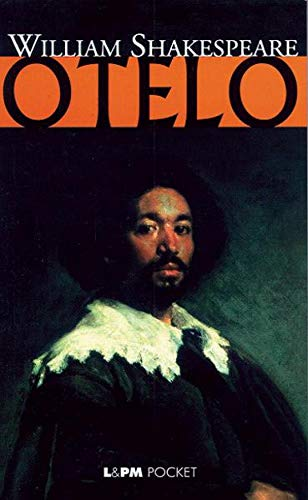

William Shakespeare fue un dramaturgo, poeta y actor inglés. Conocido en ocasiones como el Bardo de Avon, Shakespeare es considerado el escritor más importante en lengua inglesa y uno de los más célebres de la literatura universal.
Según la Encyclopædia Britannica, «Shakespeare es generalmente reconocido como el más grande de los escritores de todos los tiempos, figura única en la historia de la literatura. La fama de otros poetas, tales como Homero y Dante Alighieri, o de novelistas tales como León Tolstoy o Charles Dickens, ha trascendido las barreras nacionales, pero ninguno de ellos ha llegado a alcanzar la reputación de Shakespeare, cuyas obras hoy se leen y representan con mayor frecuencia y en más países que nunca. La profecía de uno de sus grandes contemporáneos, Ben Jonson, se ha cumplido por tanto: "Shakespeare no pertenece a una sola época sino a la eternidad"».
El crítico estadounidense Harold Bloom sitúa a Shakespeare junto a Dante Alighieri, en la cúspide de su «canon occidental»: «Ningún otro escritor ha tenido nunca tantos recursos lingüísticos como Shakespeare, tan profusos en Trabajos de amor perdidos que tenemos la impresión de que, de una vez por todas, se han alcanzado muchos de los límites del lenguaje. Sin embargo, la mayor originalidad de Shakespeare reside en la representación de personajes: Bottom es un melancólico triunfo; Shylock, un problema permanentemente equívoco para todos nosotros; pero sir John Falstaff es tan original y tan arrollador que, con él, Shakespeare da un giro de ciento ochenta grados a lo que es crear a un hombre por medio de palabras».
Jorge Luis Borges escribió sobre él: «Shakespeare es el menos inglés de los poetas de Inglaterra. Comparado con Robert Frost (de New England), con William Wordsworth, con Samuel Johnson, con Chaucer y con los desconocidos que escribieron, o cantaron, las elegías, es casi un extranjero. Inglaterra es la patria del understatement, de la reticencia bien educada; la hipérbole, el exceso y el esplendor son típicos de Shakespeare».
Shakespeare fue poeta y dramaturgo venerado ya en su tiempo, pero su reputación no alcanzó las altísimas cotas actuales hasta el siglo xix. Los románticos, particularmente, aclamaron su genio, y los victorianos adoraban a Shakespeare con una devoción que George Bernard Shaw denominó «bardolatría».
En el siglo xx, sus obras fueron adaptadas y redescubiertas en multitud de ocasiones por todo tipo de movimientos artísticos, intelectuales y de arte dramático. Las comedias y tragedias shakespearianas han sido traducidas a las principales lenguas, y constantemente son objeto de estudios y se representan en diversos contextos culturales y políticos de todo el mundo. Por otra parte, muchas de las citas y aforismos que salpican sus obras han pasado a formar parte del uso cotidiano, tanto en inglés como en otros idiomas. Y en lo personal, con el paso del tiempo, se ha especulado mucho sobre su vida, cuestionando su sexualidad, su filiación religiosa, e incluso la autoría de sus obras.
| Información Personal | |
|---|---|
| Nacimiento | 23 de abril de 1564 en Stratford-upon-Avon, Warwickshire, Reino de Inglaterra |
| Fallecimiento | 3 de mayo de 1616 (52 años) Stratford-upon-Avon, Warwickshire, Reino de Inglaterra |
| Sepultura | Iglesia de la Santísima Trinidad de Stratford-upon-Avon |
| Residencia | Stratford-upon-Avon |
| Nacionalidad | Inglesa |
| Lengua materna | Inglés britanico |
| Familia | |
| Padres | John Shakespeare Mary Arden |
| Cónyuge | Anne Hathaway (1582-1616) |
| Hijos | Susanna Hall Hamnet Shakespeare Judith Quiney |
| Educación | |
| Educado en | King Edward VI School Stratford-upon-Avon |
| Información profesional | |
| Ocupación | Dramaturgo, poeta y actor |
| Años activo | isabelino y jacobino |
| Movimiento | Teatro isabelino |
| Géneros | Tragedias Comedias Obras Historicas Fantasías Apócrifas Juicios Críticos |
- Romeo y Julieta
- Hamlet
- Macbeth
- El sueño de una noche de verano.
- Otelo 